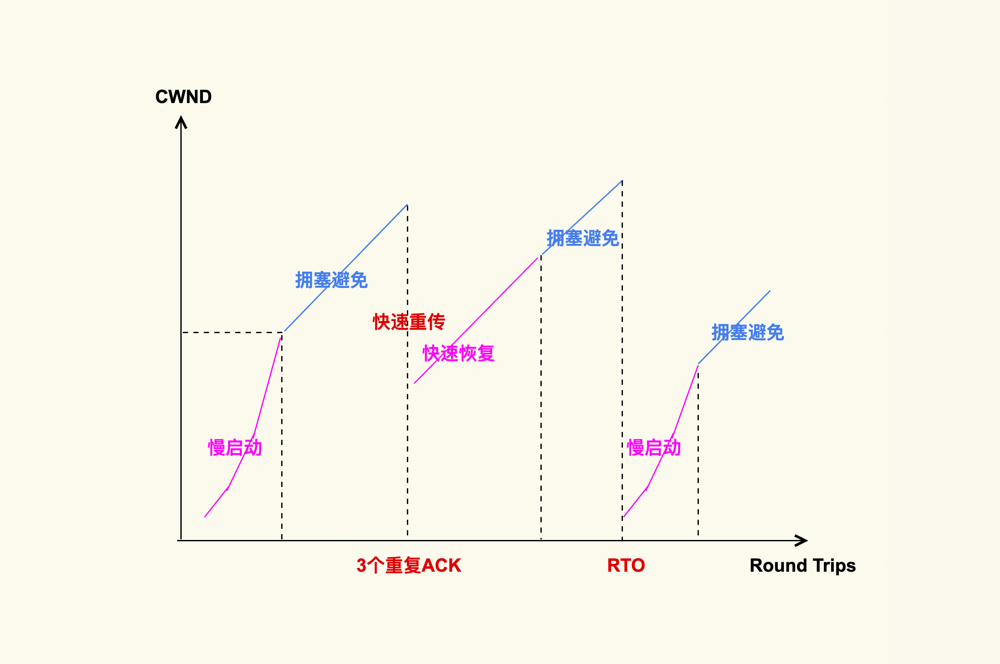
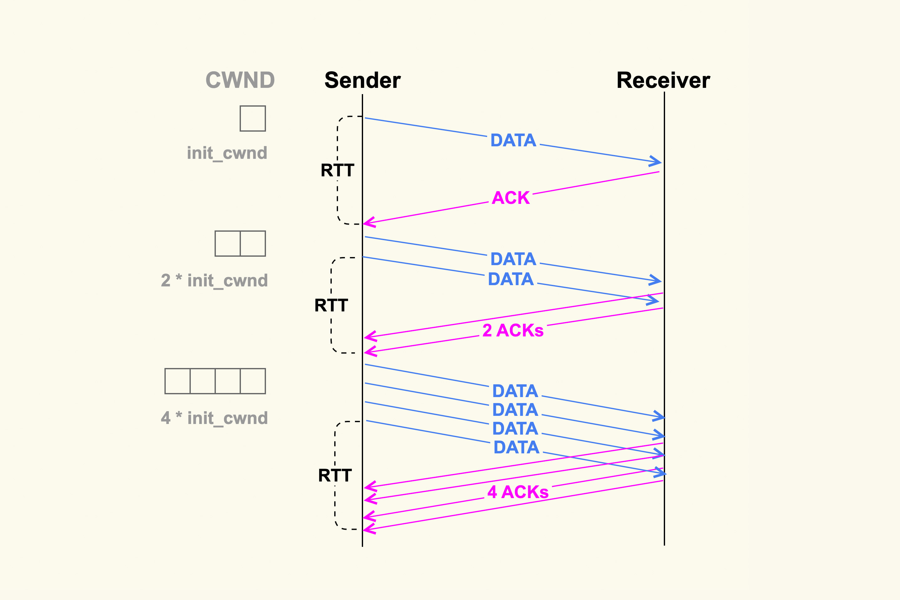
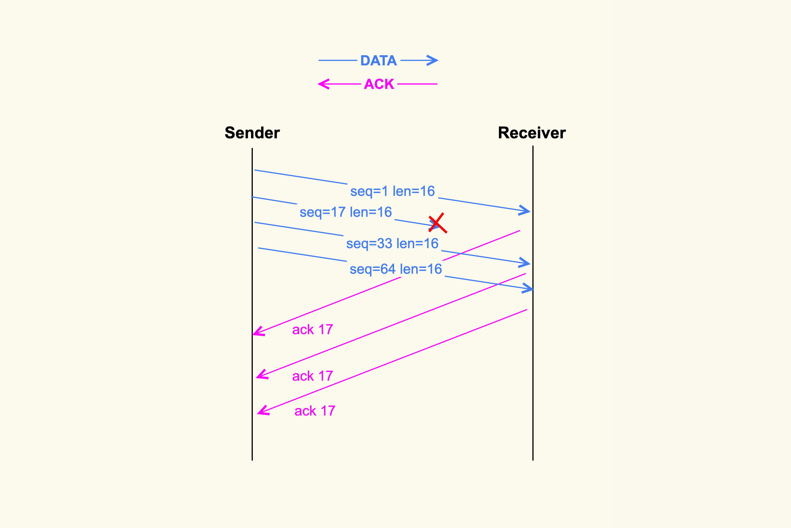
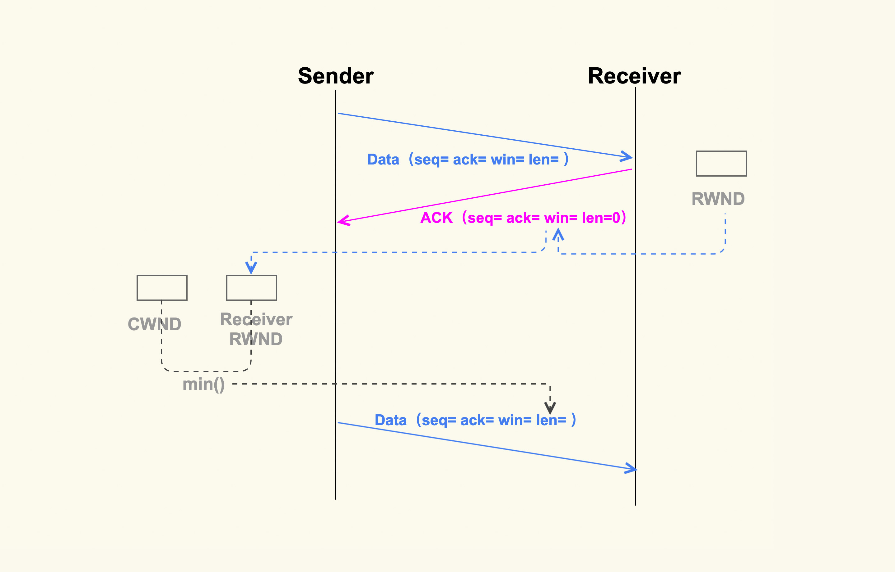

- 00 开篇词 如何让Linux内核更好地服务应用程序？.md.html
- 01 基础篇 如何用数据观测Page Cache？.md.html
- 02 基础篇 Page Cache是怎样产生和释放的？.md.html
- 03 案例篇 如何处理Page Cache难以回收产生的load飙高问题？.md.html
- 04 案例篇 如何处理Page Cache容易回收引起的业务性能问题？.md.html
- 05 分析篇 如何判断问题是否由Page Cache产生的？.md.html
- 06 基础篇 进程的哪些内存类型容易引起内存泄漏？.md.html
- 07 案例篇 如何预防内存泄漏导致的系统假死？.md.html
- 08 案例篇 Shmem：进程没有消耗内存，内存哪去了？.md.html
- 09 分析篇 如何对内核内存泄漏做些基础的分析？.md.html
- 10 分析篇 内存泄漏时，我们该如何一步步找到根因？.md.html
- 11 基础篇 TCP连接的建立和断开受哪些系统配置影响？.md.html
- 12 基础篇 TCP收发包过程会受哪些配置项影响？.md.html
- 13 案例篇 TCP拥塞控制是如何导致业务性能抖动的？.md.html
- 14 案例篇 TCP端到端时延变大，怎样判断是哪里出现了问题？.md.html
- 15 分析篇 如何高效地分析TCP重传问题？.md.html
- 16 套路篇 如何分析常见的TCP问题？.md.html
- 17 基础篇 CPU是如何执行任务的？.md.html
- 18 案例篇 业务是否需要使用透明大页：水可载舟，亦可覆舟？.md.html
- 19 案例篇 网络吞吐高的业务是否需要开启网卡特性呢？.md.html
- 20 分析篇 如何分析CPU利用率飙高问题 ？.md.html
- 加餐 我是如何使用tracepoint来分析内核Bug的？.md.html
- 结束语 第一次看内核代码，我也很懵逼.md.html
- 捐赠
13 案例篇 TCP拥塞控制是如何导致业务性能抖动的？
你好，我是邵亚方。这节课我来跟大家分享TCP拥塞控制与业务性能抖动之间的关系。
TCP拥塞控制是TCP协议的核心，而且是一个非常复杂的过程。如果你不了解TCP拥塞控制的话，那么就相当于不理解TCP协议。这节课的目的是通过一些案例，介绍在TCP拥塞控制中我们要避免踩的一些坑，以及针对TCP性能调优时需要注意的一些点。
因为在TCP传输过程中引起问题的案例有很多，所以我不会把这些案例拿过来具体去一步步分析，而是希望能够对这些案例做一层抽象，把这些案例和具体的知识点结合起来，这样会更有系统性。并且，在你明白了这些知识点后，案例的分析过程就相对简单了。
我们在前两节课（第11讲和第12讲）中讲述了单机维度可能需要注意的问题点。但是，网络传输是一个更加复杂的过程，这中间涉及的问题会更多，而且更加不好分析。相信很多人都有过这样的经历：
- 等电梯时和别人聊着微信，进入电梯后微信消息就发不出去了；
- 和室友共享同一个网络，当玩网络游戏玩得正开心时，游戏忽然卡得很厉害，原来是室友在下载电影；
- 使用ftp上传一个文件到服务器上，没想到要上传很久；
- ……
在这些问题中，TCP的拥塞控制就在发挥着作用。
TCP拥塞控制是如何对业务网络性能产生影响的 ？
我们先来看下TCP拥塞控制的大致原理。

上图就是TCP拥塞控制的简单图示，它大致分为四个阶段。
1. 慢启动
TCP连接建立好后，发送方就进入慢速启动阶段，然后逐渐地增大发包数量（TCP Segments）。这个阶段每经过一个RTT（round-trip time），发包数量就会翻倍。如下图所示：

初始发送数据包的数量是由init_cwnd（初始拥塞窗口）来决定的，该值在Linux内核中被设置为10（TCP_INIT_CWND），这是由Google的研究人员总结出的一个经验值，这个经验值也被写入了RFC6928。并且，Linux内核在2.6.38版本中也将它从默认值3修改为了Google建议的10，你感兴趣的话可以看下这个commit： tcp: Increase the initial congestion window to 10。
增大init_cwnd可以显著地提升网络性能，因为这样在初始阶段就可以一次性发送很多TCP Segments，更加细节性的原因你可以参考RFC6928的解释。
如果你的内核版本比较老（低于CentOS-6的内核版本），那不妨考虑增加init_cwnd到10。如果你想要把它增加到一个更大的值，也不是不可以，但是你需要根据你的网络状况多做一些实验，从而得到一个较为理想的值。因为如果初始拥塞窗口设置得过大的话，可能会引起很高的TCP重传率。当然，你也可以通过ip route的方式来更加灵活地调整该值，甚至将它配置为一个sysctl控制项。
增大init_cwnd的值对于提升短连接的网络性能会很有效，特别是数据量在慢启动阶段就能发送完的短连接，比如针对http这种服务，http的短连接请求数据量一般不大，通常在慢启动阶段就能传输完，这些都可以通过tcpdump来进行观察。
在慢启动阶段，当拥塞窗口（cwnd）增大到一个阈值（ ssthresh，慢启动阈值）后，TCP拥塞控制就进入了下一个阶段：拥塞避免（Congestion Avoidance）。
2.拥塞避免
在这个阶段cwnd不再成倍增加，而是一个RTT增加1，即缓慢地增加cwnd，以防止网络出现拥塞。网络出现拥塞是难以避免的，由于网络链路的复杂性，甚至会出现乱序（Out of Order）报文。乱序报文产生原因之一如下图所示：

在上图中，发送端一次性发送了4个TCP segments，但是第2个segment在传输过程中被丢弃掉了，那么接收方就接收不到该segment了。然而第3个TCP segment和第4个TCP segment能够被接收到，此时3和4就属于乱序报文，它们会被加入到接收端的ofo queue（乱序队列）里。
丢包这类问题在移动网络环境中比较容易出现，特别是在一个网络状况不好的环境中，比如在电梯里丢包率就会很高，而丢包率高就会导致网络响应特别慢。在数据中心内部的服务上很少会有数据包在网络链路中被丢弃的情况，我说的这类丢包问题主要是针对网关服务这种和外部网络有连接的服务上。
针对我们的网关服务，我们自己也做过一些TCP单边优化工作，主要是优化Cubic拥塞控制算法，以缓解丢包引起的网络性能下降问题。另外，Google前几年开源的一个新的拥塞控制算法BBR在理论上也可以很好地缓解TCP丢包问题，但是在我们的实践中，BBR的效果并不好，因此我们最终也没有使用它。
我们再回到上面这张图，因为接收端没有接收到第2个segment，因此接收端每次收到一个新的segment后都会去ack第2个segment，即ack 17。紧接着，发送端就会接收到三个相同的ack（ack 17）。连续出现了3个响应的ack后，发送端会据此判断数据包出现了丢失，于是就进入了下一个阶段：快速重传。
3.快速重传和快速恢复
快速重传和快速恢复是一起工作的，它们是为了应对丢包这种行为而做的优化，在这种情况下，由于网络并没有出现拥塞，所以拥塞窗口不必恢复到初始值。判断丢包的依据就是收到3个相同的ack。
Google的工程师同样对TCP快速重传提出了一个改进策略：tcp early retrans，它允许一些情况下的TCP连接可以绕过重传延时（RTO）来进行快速重传。3.6版本以后的内核都支持了这个特性，因此，如果你还在使用CentOS-6，那么就享受不到它带来的网络性能提升了，你可以将你的操作系统升级为CentOS-7或者最新的CentOS-8。 另外，再多说一句，Google在网络方面的技术实力是其他公司没法比的，Linux内核TCP子系统的maintainer也是Google的工程师（Eric Dumazet）。
除了快速重传外，还有一种重传机制是超时重传。不过，这是非常糟糕的一种情况。如果发送出去一个数据包，超过一段时间（RTO）都收不到它的ack，那就认为是网络出现了拥塞。这个时候就需要将cwnd恢复为初始值，再次从慢启动开始调整cwnd的大小。
RTO一般发生在网络链路有拥塞的情况下，如果某一个连接数据量太大，就可能会导致其他连接的数据包排队，从而出现较大的延迟。我们在开头提到的，下载电影影响到别人玩网络游戏的例子就是这个原因。
关于RTO，它也是一个优化点。如果RTO过大的话，那么业务就可能要阻塞很久，所以在3.1版本的内核里引入了一种改进来将RTO的初始值从3s调整为1s，这可以显著节省业务的阻塞时间。不过，RTO=1s 在某些场景下还是有些大了，特别是在数据中心内部这种网络质量相对比较稳定的环境中。
我们在生产环境中发生过这样的案例：业务人员反馈说业务RT抖动得比较厉害，我们使用strace初步排查后发现，进程阻塞在了send()这类发包函数里。然后我们使用tcpdump来抓包，发现发送方在发送数据后，迟迟不能得到对端的响应，一直到RTO时间再次重传。与此同时，我们还尝试了在对端也使用tcpdump来抓包，发现对端是过了很长时间后才收到数据包。因此，我们判断是网络发生了拥塞，从而导致对端没有及时收到数据包。
那么，针对这种网络拥塞引起业务阻塞时间太久的情况，有没有什么解决方案呢？一种解决方案是，创建TCP连接，使用SO_SNDTIMEO来设置发送超时时间，以防止应用在发包的时候阻塞在发送端太久，如下所示：
ret = setsockopt(sockfd, SOL_SOCKET, SO_SNDTIMEO, &timeout, len);
当业务发现该TCP连接超时后，就会主动断开该连接，然后尝试去使用其他的连接。
这种做法可以针对某个TCP连接来设置RTO时间，那么，有没有什么方法能够设置全局的RTO时间（设置一次，所有的TCP连接都能生效）呢？答案是有的，这就需要修改内核。针对这类需求，我们在生产环境中的实践是：将TCP RTO min、TCP RTO max、TCP RTO init 更改为可以使用sysctl来灵活控制的变量，从而根据实际情况来做调整，比如说针对数据中心内部的服务器，我们可以适当地调小这几个值，从而减少业务阻塞时间。
上述这4个阶段是TCP拥塞控制的基础，总体来说，拥塞控制就是根据TCP的数据传输状况来灵活地调整拥塞窗口，从而控制发送方发送数据包的行为。换句话说，拥塞窗口的大小可以表示网络传输链路的拥塞情况。TCP连接cwnd的大小可以通过ss这个命令来查看：
$ ss -nipt
State Recv-Q Send-Q Local Address:Port Peer Address:Port
ESTAB 0 36 172.23.245.7:22 172.30.16.162:60490
users:(("sshd",pid=19256,fd=3))
cubic wscale:5,7 rto:272 rtt:71.53/1.068 ato:40 mss:1248 rcvmss:1248 advmss:1448 cwnd:10 bytes_acked:19591 bytes_received:2817 segs_out:64 segs_in:80 data_segs_out:57 data_segs_in:28 send 1.4Mbps lastsnd:6 lastrcv:6 lastack:6 pacing_rate 2.8Mbps delivery_rate 1.5Mbps app_limited busy:2016ms unacked:1 rcv_space:14600 minrtt:69.402
通过该命令，我们可以发现这个TCP连接的cwnd为10。
如果你想要追踪拥塞窗口的实时变化信息，还有另外一个更好的办法：通过tcp_probe这个tracepoint来追踪：
/sys/kernel/debug/tracing/events/tcp/tcp_probe
但是这个tracepoint只有4.16以后的内核版本才支持，如果你的内核版本比较老，你也可以使用tcp_probe这个内核模块（net/ipv4/tcp_probe.c）来进行追踪。
除了网络状况外，发送方还需要知道接收方的处理能力。如果接收方的处理能力差，那么发送方就必须要减缓它的发包速度，否则数据包都会挤压在接收方的缓冲区里，甚至被接收方给丢弃掉。接收方的处理能力是通过另外一个窗口——rwnd（接收窗口）来表示的。那么，接收方的rwnd又是如何影响发送方的行为呢？
接收方是如何影响发送方发送数据的？
同样地，我也画了一张简单的图，来表示接收方的rwnd是如何影响发送方的：

如上图所示，接收方在收到数据包后，会给发送方回一个ack，然后把自己的rwnd大小写入到TCP头部的win这个字段，这样发送方就能根据这个字段来知道接收方的rwnd了。接下来，发送方在发送下一个TCP segment的时候，会先对比发送方的cwnd和接收方的rwnd，得出这二者之间的较小值，然后控制发送的TCP segment个数不能超过这个较小值。
关于接收方的rwnd对发送方发送行为的影响，我们曾经遇到过这样的案例：业务反馈说Server向Client发包很慢，但是Server本身并不忙，而且网络看起来也没有问题，所以不清楚是什么原因导致的。对此，我们使用tcpdump在server上抓包后发现，Client响应的ack里经常出现win为0的情况，也就是Client的接收窗口为0。于是我们就去Client上排查，最终发现是Client代码存在bug，从而导致无法及时读取收到的数据包。
对于这种行为，我同样给Linux内核写了一个patch来监控它：tcp: add SNMP counter for zero-window drops 。这个patch里增加了一个新的SNMP 计数：TCPZeroWindowDrop。如果系统中发生了接收窗口太小而无法收包的情况，就会产生该事件，然后该事件可以通过/proc/net/netstat里的TCPZeroWindowDrop这个字段来查看。
因为TCP头部大小是有限制的，而其中的win这个字段只有16bit，win能够表示的大小最大只有65535（64K），所以如果想要支持更大的接收窗口以满足高性能网络，我们就需要打开下面这个配置项，系统中也是默认打开了该选项：
net.ipv4.tcp_window_scaling = 1
关于该选项更加详细的设计，你如果想了解的话，可以去参考RFC1323。
好了，关于TCP拥塞控制对业务网络性能的影响，我们就先讲到这里。
课堂总结
TCP拥塞控制是一个非常复杂的行为，我们在这节课里讲到的内容只是其中一些基础部分，希望这些基础知识可以让你对TCP拥塞控制有个大致的了解。我来总结一下这节课的重点：
- 网络拥塞状况会体现在TCP连接的拥塞窗口（cwnd）中，该拥塞窗口会影响发送方的发包行为；
- 接收方的处理能力同样会反馈给发送方，这个处理是通过rwnd来表示的。rwnd和cwnd会共同作用于发送方，来决定发送方最大能够发送多少TCP包；
- TCP拥塞控制的动态变化，可以通过tcp_probe这个tracepoint（对应4.16+的内核版本）或者是tcp_probe这个内核模块（对应4.16之前的内核版本）来进行实时观察，通过tcp_probe你能够很好地观察到TCP连接的数据传输状况。
课后作业
通过ssh登录到服务器上，然后把网络关掉，过几秒后再打开，请问这个ssh连接还正常吗？为什么？欢迎你在留言区与我讨论。
感谢你的阅读，如果你认为这节课的内容有收获，也欢迎把它分享给你的朋友，我们下一讲见。
© 2019 - 2023 Liangliang Lee. Powered by gin and hexo-theme-book.